About me
Hi, I'm Arundhati,
the delusional sloth.
I've been making things since I was nine. Today I shape brand systems, lead creative direction and run go-to-market launches across the Middle East, Europe and the US, with AI workflows doing the heavy lifting so the craft gets more of my time, not less.
Off the clock you'll find me painting, chasing a trail or a river with music on, and spending every spare minute with my dog, who is, without question, my favourite person.
How I grew
Twenty years of making, one chapter at a time.
-
9 yearsFrom age nine
Fine arts, from the very start
Paper, paint and patience: fine arts trained my hands and eye first.
-
4 yearsSir J.J. Institute, Mumbai
Many styles, one hand
Fine arts met graphic and digital practice, from brush to type to screen.
-
2 yearsNIFT, New Delhi
A reason behind the feeling
Design and research gave art's subjectiveness a reason and a logic.
-
5 yearsSince then
Craft at work, art at heart
Mostly digital for brands, still painting for joy and for gifts that mean something.
What I'm made of
Half strategist, half sketchbook, all heart.
-
Research first
I dig before I draw, and keep an eye on what's next so the work stays relevant.
-
Built for teams
I bring people and functions together, with open feedback, both ways.
-
Story meets strategy
Design craft and marketing sense in one head: work that looks right and performs.
Beyond the desk
The things that shape me.
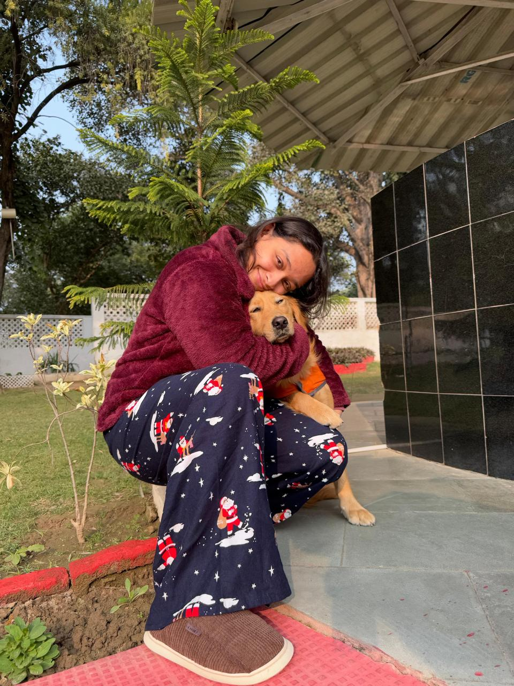
Music
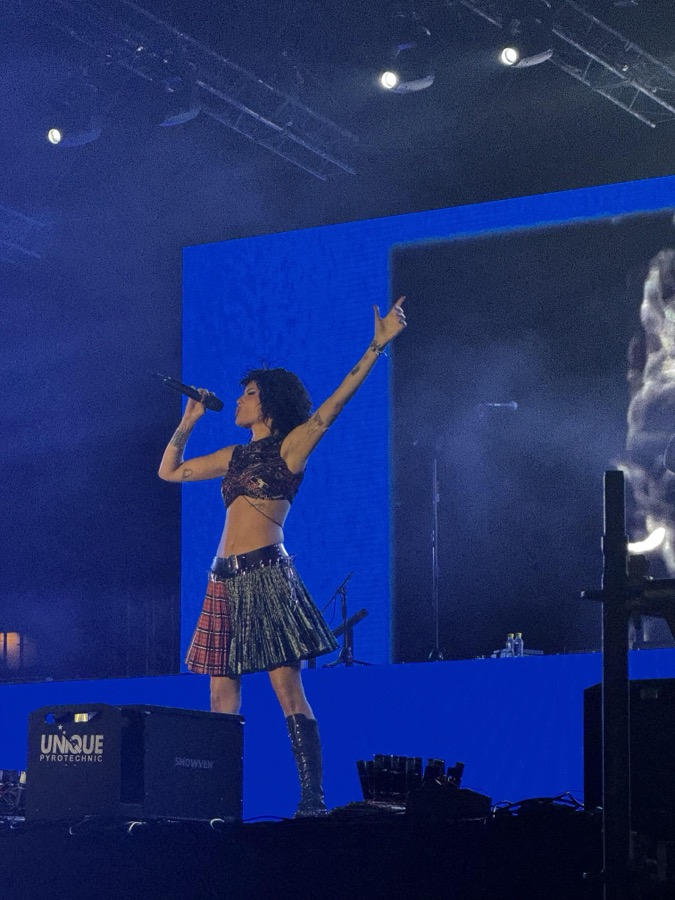
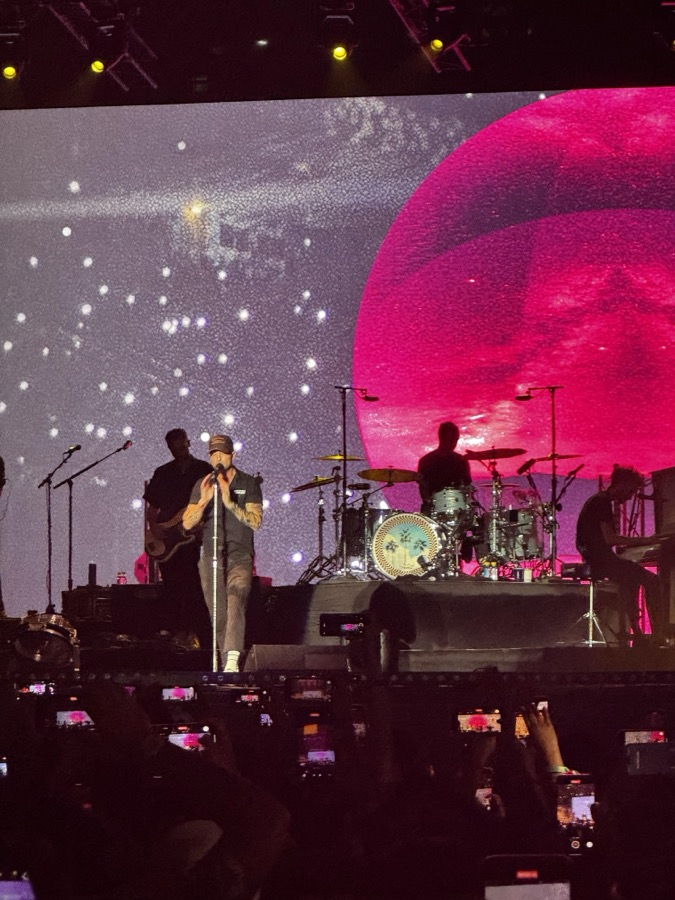
Sports
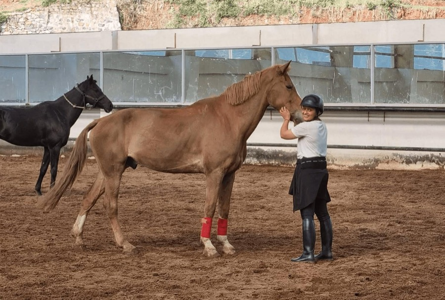
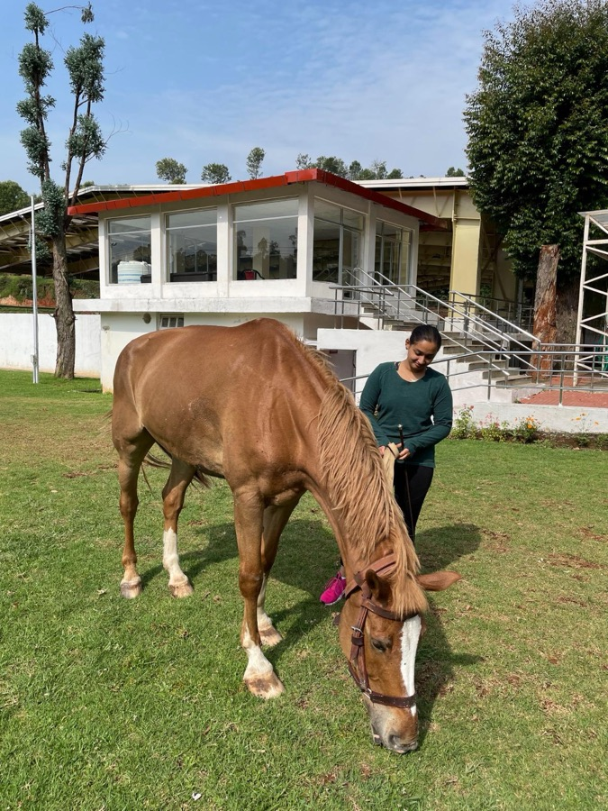
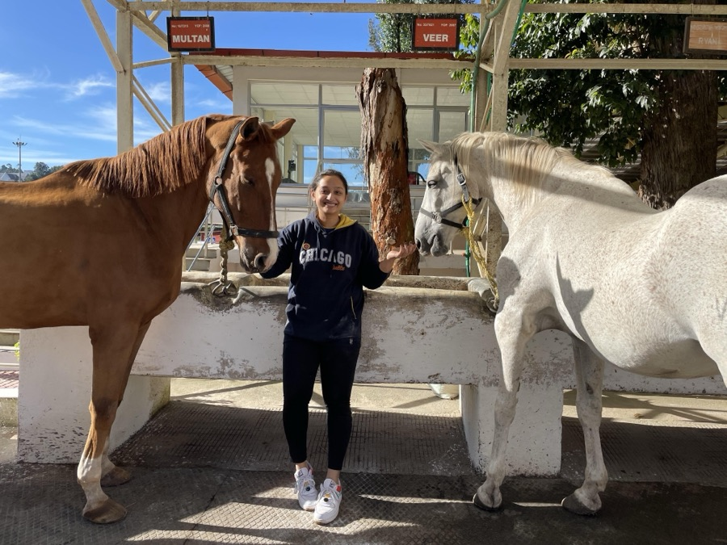
Art
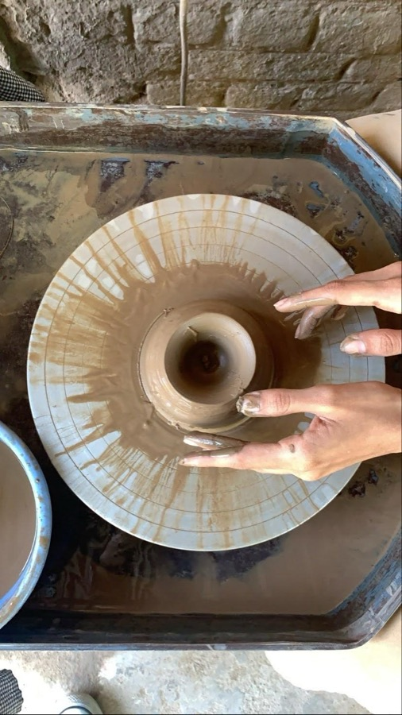
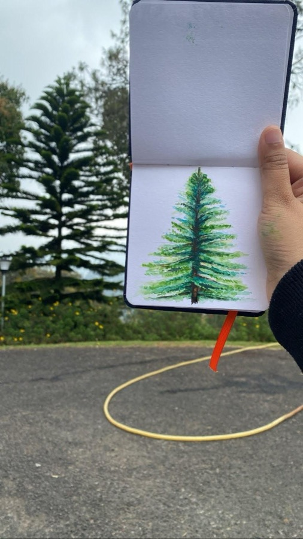
Explorations
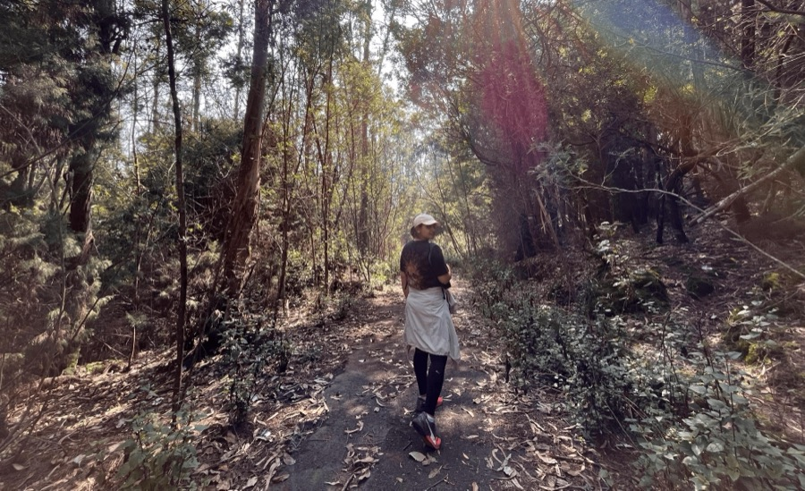
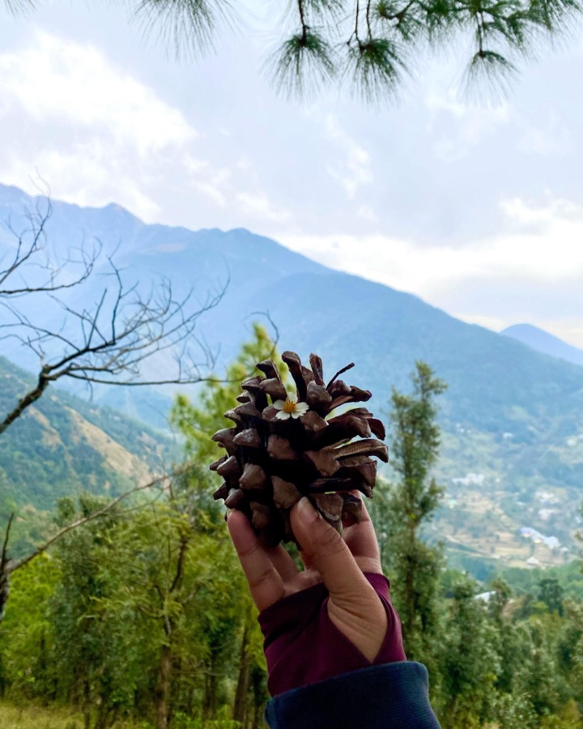
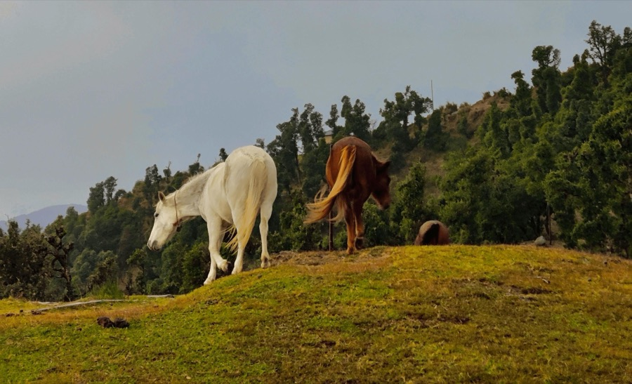
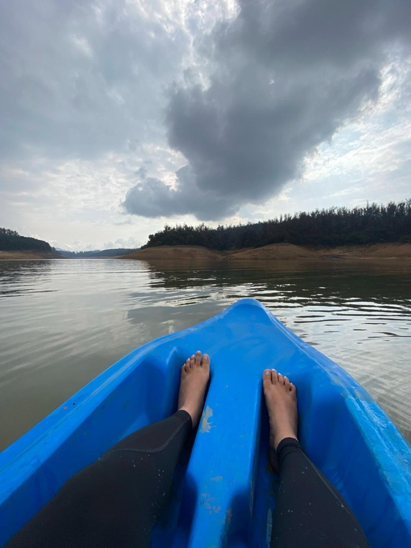
Dogs
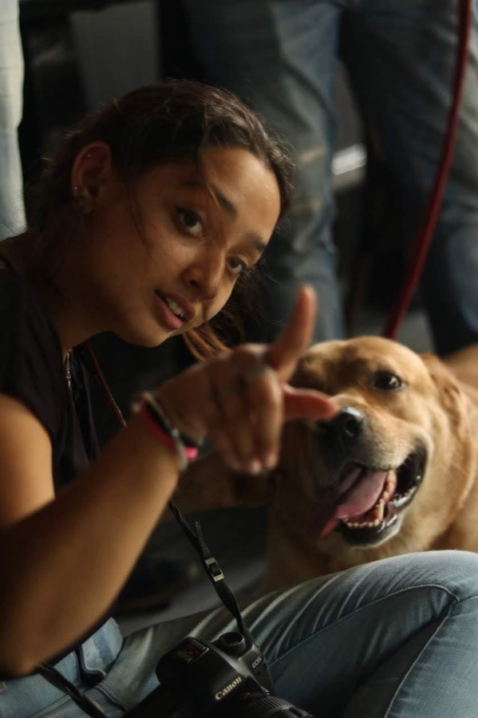
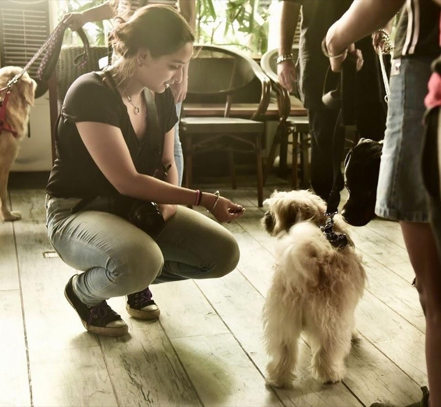
TrailsTravelHorsesClayHandmade giftsPlaylists on loop
Off the clock
My sketchbook, always open.
The art I make for myself: ink a day challenges, colour studies, a deaf-awareness series and things I've painted on. Tap any piece to look closer.
Follow the sketchbook@delusion_art_studioDrag or swipe a row to move it. Tap any piece to see it up close.